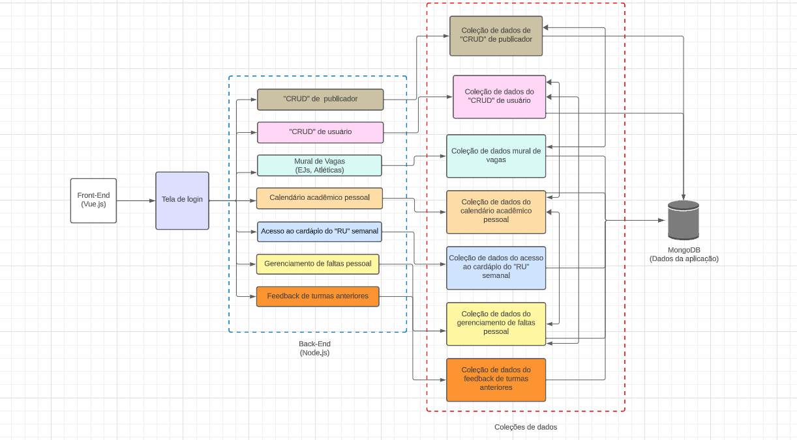

Documento de Arquitetura
Versão 1.2
Histórico de Revisão
| Data | Versão | Descrição | Autor(es) |
|---|---|---|---|
| 01/11/2023 | 0.1 | Desenvolvimento de tópicos | Breno Fernandes, Breno Lucena, Kauan Eiras, Leonardo Ferreira, Matheus Diogo, Samuel Victor |
| 03/11/2023 | 1.0 | Revisão para entrega | Lucas Antunes, Mateus Vieira |
| 26/11/2023 | 1.1 | Atualização do documento | Mateus Vieira |
Tabela 5.1: Versões
Autores:
| Matrícula | Nome | Descrição do papel assumido na equipe | % de contribuição ao trabalho |
|---|---|---|---|
| 202017540 | Breno Fernandes | Participou no desenvolvimento do documento de visão do produto; Participou no desenvolvimento do documento de declaração de escopo; Participou no desenvolvimento do documento de arquitetura. |
9% |
| 202017343 | Breno Lucena | Participou no desenvolvimento do documento de visão do produto; Participou no desenvolvimento do documento de declaração de escopo; Participou no desenvolvimento do documento de arquitetura. |
12.5% |
| 232014727 | Kauan Eiras | Participou no desenvolvimento do documento de visão do produto; Participou no desenvolvimento do documento de declaração de escopo; Participou no desenvolvimento do documento de arquitetura. |
12.5% |
| 200032166 | Leonardo Ferreira | Participou no desenvolvimento do documento de visão do produto; Participou no desenvolvimento do documento de declaração de escopo; Participou no desenvolvimento do documento de arquitetura. |
12.5% |
| 190091681 | Lucas Antunes | Participou no desenvolvimento do documento de visão do produto; Participou no desenvolvimento do documento de declaração de escopo; Participou no desenvolvimento do documento de arquitetura. Participou na revisão do documento de visão do produto; Participou na revisão do documento de declaração de escopo; Participou na revisão do documento de arquitetura. |
13.5% |
| 202016963 | Mateus Vieira | Participou no desenvolvimento do documento de visão do produto; Participou no desenvolvimento do documento de declaração de escopo; Participou no desenvolvimento do documento de arquitetura. Participou na revisão documento de visão do produto; Participou na revisão do documento de declaração de escopo; Participou na revisão do documento de arquitetura. |
13.5% |
| 200024949 | Matheus Diogo | Participou no desenvolvimento do documento de visão do produto; Participou no desenvolvimento do documento de declaração de escopo; Participou no desenvolvimento do documento de arquitetura. |
12.5% |
| 190059001 | Samuel Victor | Participou no desenvolvimento do documento de visão do produto; Participou no desenvolvimento do documento de declaração de escopo; Participou no desenvolvimento do documento de arquitetura. |
13.5% |
Tabela 5.2: Autores
Sumário
- 2.2 Justifique sua escolha
- 2.3 Detalhamento
- 2.4 Metas e restrições arquiteturais
- 2.5 Visão de Casos de uso (escopo do produto)
- 2.6 Visão lógica
- 2.7 Visão de Implementação
- 2.8 Visão de Implantação
- 2.9 Restrições adicionais e características de qualidade relevantes para o software
- 4.2 Desenho esquemático de casos de usos
- 4.3 Desenho esquemático de estados
- 4.4 Desenho esquemático de atividades
- 4.5 Desenho esquemático implementação
- 4.6 Desenho esquemático de implantação
- 5.1 Tabela 5.1: Versões
- 5.2 Tabela 5.2: Autores
- 5.3 Tabela 5.3: Visão lógica
1. Introdução
1.1 Propósito
Este documento descreve a arquitetura do sistema UnB na Mão, sendo desenvolvido pelo grupo Antares da disciplina de MDS – Metodos de Desenvolvimento de Software - do semestre 2/2023. O objetivo deste documento é fornecer uma visão abrangente do sistema para desenvolvedores, testadores, alunos de Engenharia de Software, professores e demais interessados.
O documento de arquitetura é essencial para o desenvolvimento desse projeto, pois ele fornece uma visão geral do sistema, incluindo sua estrutura, organização e componentes.
1.2 Escopo
O software UnB na Mão é uma aplicação web que unifica as informações disponibilizadas em diferentes plataformas da Universidade de Brasília em um único aplicativo. O objetivo do sistema é facilitar o acesso à informações de uso cotidiano, avaliar disciplinas e ajudar alunos se organizarem.
O sistema terá como público-alvo os estudantes e grupos acadêmicos da Universidade de Brasília. O sistema terá as seguintes funcionalidades:
- Acesso a informações básicas da universidade, como calendário acadêmico e cardápio do restaurante universitário (RU);
- Mural de vagas terá informações sobre vagas de estágio e atividades extracurriculares;
- Ambiente de avaliação de disciplinas por meio dos alunos;
- Ambiente para controle de faltas em disciplinas.
O UnB na Mão possui diferentes tipos de usuários com diferentes níveis de acesso. O administrador tem acesso a todas as funções do sistema, incluindo o gerenciamento de perfis de acesso, criação de novos usuários e gerenciamento de registros dos publicadores. Os alunos têm acesso a funcionalidades específicas, como avaliação de disciplinas, controle de faltas e visualização de publicações dos publicadores. Os publicadores poderão divulgar oportunidades no mural de vagas.
A arquitetura do software UnB na Mão será baseada em três camadas:
- Camada de apresentação: onde acontecerá a interação com o usuário. É composta por componentes HTML, CSS, Javascript e Vue.js.
- Camada de negócios: onde acontecerá o processamento dos dados e terá a lógica de negócios do sistema. É composta por componentes em TypeScript e NodeJS.
- Camada de dados: onde será feito o armazenamento dos dados dos usuários e sistema. É composta por um banco de dados não relacional, utilizando o MongoDB.
Para o desenvolvimento do UnB na Mão, a equipe de seguirá a metodologia Scrum XP, com sprints semanais e reuniões de revisão conforme necessário. Para tarefas complexas, a programação em pares será empregada. A equipe também planeja implementar a Integração Contínua com Testes de Unidade e a técnica de revisão de código antes da mesclagem na Branch principal.
Métricas de Qualidade:
A equipe utilizará a Taxa de Resolução de Defeitos (TRD) como métrica de qualidade para avaliar a eficiência na identificação e correção de defeitos. Os critérios de avaliação da TRD serão:
- TRD > 90%: Excelente
- 80% ≤ TRD ≤ 90%: Bom
- TRD < 80%: Necessita de melhorias significativas na gestão de defeitos
Ao final do desenvolvimento, serão realizados vários tipos de testes, incluindo:
- Testes Manuais: Para testar unidades de código individuais.
- Testes de Unidade: Para testar unidades de código individuais.
- Testes de Integração: Para verificar a integração entre módulos e componentes do sistema.
2 - Representação Arquitetural
2.1 - Definições
O sistema seguirá uma arquitetura de microserviços, que é um estilo arquitetural em que o aplicativo é dividido em pequenos serviços independentes e altamente coesos. Cada microserviços desempenha uma função específica e se comunica com outros microserviços por meio de protocolos padronizados, como HTTP. A arquitetura de micro serviços permite escalabilidade, manutenção independente, rápida implementação de novos recursos e flexibilidade no desenvolvimento e implantação do sistema.
2.2 - Justifique sua escolha.
Escopo do Projeto e Objetivos do Produto: O projeto "UnB na Mão" tem um amplo escopo, com funcionalidades variadas, como acesso a informações acadêmicas, gerenciamento acadêmico, cardápio do Restaurante Universitário, publicações informativas e muito mais. A arquitetura de micro serviços permite a divisão das funcionalidades em componentes independentes, o que facilita o desenvolvimento, a manutenção e a evolução contínua de cada parte do sistema (Antares Escopo, 2023, P 6-9).
Equipe de Desenvolvimento Diversificada: A equipe de desenvolvimento inclui diversos membros, cada um com sua especialização e responsabilidades específicas. A arquitetura de microserviços permite que diferentes equipes ou desenvolvedores individuais se concentrem em microserviços específicos, o que simplifica a colaboração e a distribuição de trabalho ( Antares Visão do Produto e Projeto, 2023, P 7).
Escalabilidade: A arquitetura de microserviços permite que diferentes partes do sistema sejam desenvolvidas, implantadas e escaladas independentemente. Isso é particularmente importante no contexto do projeto "UnB na Mão", que pode crescer ao longo do tempo. Diversos requisitos apresentados na Declaração de Escopo do Produto indicam a necessidade de escalabilidade para acomodar mais usuários, funcionalidades e integrações no futuro.(Antares Visão do Produto e Projeto, 2023, P 8-9).
Cultura Organizacional e Colaboração: A equipe expressa a importância da colaboração entre diferentes partes interessadas. A arquitetura de microserviços incentiva uma cultura de colaboração, pois diferentes equipes podem se concentrar em microserviços específicos sem afetar indevidamente o trabalho das outras equipes.
2.3 - Detalhamento
Introdução:
Nossa escolha de arquitetura por microserviços é baseada na análise dos documentos fornecidos, incluindo a "Visão do Produto" e a "Declaração de Escopo do Produto". A arquitetura por microserviços se alinha com os requisitos e objetivos do nosso sistema, fornecendo a flexibilidade e escalabilidade necessárias para atender às demandas dos usuários.
Ao adotar essa abordagem, visamos criar um sistema ágil, escalável e resiliente que se adapte com facilidade às mudanças nas necessidades dos usuários. Isso se alinha diretamente com a visão estabelecida no documento "Visão do Produto", que destaca a importância da capacidade de resposta às necessidades do mercado em constante evolução e à rápida implantação de novos recursos.
Descrição da Arquitetura por Microserviços:
A arquitetura por microserviços é caracterizada pela sua capacidade de dividir o sistema em pequenos componentes independentes chamados microserviços. Cada microserviço possui uma responsabilidade específica no sistema e opera de forma autônoma, estabelecendo comunicação com outros microserviços por meio de interfaces bem definidas.
Esta escolha arquitetônica se alinha diretamente com a visão estabelecida no documento "Visão do Produto", que enfatiza a necessidade de um sistema que possa se adaptar rapidamente às mudanças nas demandas do mercado e integrar novos recursos de forma ágil. Os microserviços oferecem a agilidade necessária, permitindo o desenvolvimento, implantação e atualização independentes de cada componente, resultando em ciclos de desenvolvimento mais curtos e entregas mais rápidas.

Figura 4.1: Desenho esquemático da arquitetura de microserviço.
2.4 - Metas e restrições arquiteturais
Restrição:
- Devido à adoção de uma arquitetura de microsserviços, tem um aumento na complexidade do gerenciamento de vários serviços, na implantação e no monitoramento.
- Requer uma comunicação eficaz entre serviços, o que pode afetar o desempenho da rede devido à interdependência entre muitos pequenos serviços.
- Microsserviços são resultados diretos de sua natureza aberta, com uma ampla superfície sujeita a ataques.
- A sincronização e a consistência dos dados entre os serviços podem ser desafiadoras e requerem atenção cuidadosa.
- Se não for bem arquitetado, o gateway de API pode se tornar um gargalo e ponto único de falha.
Metas:
- Implementar uma solução de governança eficaz para gerenciamento, implantação e monitoramento de microsserviços, simplificando a complexidade inerente à arquitetura distribuída.
- Isolar serviços para minimizar o impacto de falhas em um serviço sobre outros.
- Meta: Permitir que os serviços individuais sejam melhorados independentemente com base na demanda.
- Gerenciar a lógica do gateway de roteamento durante a implantação para direcionar as solicitações corretamente.
- Garantir que o sistema seja capaz de se conectar e interagir eficazmente com os sistemas já em uso pela universidade.
- O aplicativo deve ser responsivo, adaptando-se a dispositivos móveis e desktops.
2.5 - Visão de Casos de uso (escopo do produto)
O escopo do produto engloba a implementação de um sistema que permite a acesso e interação de alunos e publicadores. Ele oferece funcionalidades que abrangem desde o acesso ao sistema até a gestão acadêmica, incluindo a visualização de informações como o mural de vagas, avaliações de disciplinas, cardápio do restaurante universitário, gerenciamento de disciplinas em curso, registro de faltas e informações acadêmicas importantes no calendário. De forma que tenha um acesso rápido e intuitivo para ser utilizado no dia a dia acadêmico da UnB. Tanto na criação de posts para informar os estudantes quanto a visualização desses posts.
O grupo possui integrantes tanto com habilidades fullstack, quanto frontend e backend separadamente. Tem-se como parâmetro de pareamento a diferença de experiência da dupla.
2.6 - Visão lógica
| Módulo | Descrição | Comunicação com Interfaces |
|---|---|---|
| Login | cesso ao sistema fazendo login, direcionar para redefinir a senha e fazer cadastro. | Registro e redefinição de senha. |
| Registro | Fazer o cadastro como aluno ou publicador | Voltar para tela de login |
| Redefinição de Senha | Redefinir a senha esquecida. | Voltar para tela de login. |
| Mural de Vagas | Usuários poderão visualizar possíveis vagas e publicadores poderão divulgar possíveis vagas. | Voltar para menu. |
| Avaliação de Disciplinas | Usuários poderão avaliar turmas de disciplinas a qual estiveram presentes e visualizar outras avaliações. | Voltar para menu. |
| Cardápio do Restaurante Universitário | Usuários visualizarão o cardápio semanal do restaurante universitário | Voltar para menu. |
| Controle de Faltas | Usuários terão controle de suas presenças para cada disciplina cursada. | Voltar para menu. |
| Calendário Pessoal | Usuários terão acesso ao seu calendário pessoal para organização acadêmica | Voltar para menu. |
| Meu Perfil | Usuários terão acesso ao seu perfil e visualizar os seus dados, podendo também fazer atualizações. | Voltar para menu. |
Tabela 5.3: Visão lógica

Figura 4.2: Desenho esquemático de casos de usos.
No diagrama de casos de uso é possível visualizar que existem três tipos de perfil de acesso, que são, administradores, alunos e publicadores (EJs/atléticas). Suas funções dentro do sistema possuem variações. O administrador tem acesso a todos as funções do sistema, mas só ele pode gerenciar perfis de acesso, criar novos usuários e gerenciar registros dos publicadores. O aluno pode avaliar turmas anteriores, ter o controle de suas faltas, atualizar o cardápio semanal e também visualizar as publicações. Os publicadores são responsáveis por divulgar informações acadêmicas.

Figura 4.3: Desenho esquemático de estados.
O diagrama de estados é aplicado para demonstrar o comportamento geral do sistema, mostrando os estados e transições do funcionamento do UnB na Mão. Sendo assim, é possível entender o funcionamento do sistema conforme ele é utilizado, começando com:
- TELA DE LOGIN: Ao começar a utilizar o sistema, o usuário terá que fazer o login para poder ter acesso aos micros serviços, porém, caso o usuário não tenha conta no sistema, ele terá que acessar a tela de cadastro, e em caso de esquecimento de senha, poderá acessar a tela de redefinir senha.
- TELA DE MENU: Tanto o Aluno quanto o Publicador têm acesso a informações e documentos relacionados à UnB. Caso o usuário consiga efetuar o login com sucesso, ele terá acesso ao menu de opções com os microsserviços, onde conseguirá usufruir de cada funcionalidade desejada, sendo elas:
- Mural de vagas
- Controle de faltas pessoal
- Avaliação de disciplinas
- Cardápio do restaurante universitário
- Calendário acadêmico pessoal
Após acessar o serviço desejado, o usuário poderá retornar ao menu, e, caso queira, utilizar outros microsserviços.

Figura 4.4: Desenho esquemático de atividades.
O diagrama de atividades é aplicado para descrever as etapas realizadas conforme o usuário usa o sistema, deixando o funcionamento do sistema mais claro. Sendo assim, no diagrama acima, é possível ver o que acontece em cada possibilidade conforme o usuário utiliza o sistema desde quando o usuário abre o sistema e se depara com a tela de login até quando o usuário já utilizou o serviço utilizado.
2.7 - Visão de Implementação

Figura 4.5: Desenho esquemático implementação
No processo de implementação do sistema, a primeira etapa prioritária será a criação da interface das páginas. Essa interface desempenha um papel central ao proporcionar aos usuários a interação com o sistema, permitindo-lhes acessar e utilizar as funcionalidades disponíveis de forma amigável e eficaz. A partir dela, os usuários poderão inserir comandos e solicitações que, por sua vez, terão acesso à lógica subjacente responsável por alterar os dados no banco de dados. Esta abordagem modular e bem definida, como representada no diagrama de pacotes, estabelece uma base sólida para o desenvolvimento do sistema, garantindo que a interface e a lógica de dados trabalhem em conjunto para fornecer uma experiência de usuário consistente e funcional. Conforme o projeto progride, essa interconexão entre a interface e a lógica de dados possibilitará a gestão eficiente e segura das informações armazenadas no banco de dados.
2.8 - Visão de Implantação

Figura 4.6: Desenho esquemático de implantação.
A implantação do software é um processo crucial que envolve a coordenação de diversos componentes para garantir o funcionamento eficiente do sistema. Conforme representado no diagrama de implantação, a arquitetura é composta por diferentes camadas. O dispositivo do usuário atua como a interface primária, permitindo que os usuários acessem o frontend do projeto por meio de um navegador web. A partir daí, um servidor web entra em ação, servindo como uma ponte para a interface do usuário, fornecendo acesso e garantindo uma experiência de usuário eficaz. No backend, o servidor de aplicação desempenha um papel fundamental, gerenciando a lógica de negócios e processando as solicitações dos usuários. Além disso, o servidor de banco de dados MongoDB armazena e recupera os dados necessários para a funcionalidade do sistema, e cada um passa para a sua respectiva coleção que armazena os dados de sua função A combinação desses componentes cria um ambiente escalável e altamente interconectado que permite aos usuários interagir de maneira eficaz com o sistema, ao mesmo tempo em que mantém a integridade e a disponibilidade dos dados.
A abordagem modular apresentada no diagrama de implantação reflete uma estratégia de implantação sólida, onde cada componente desempenha um papel específico e interage harmoniosamente para fornecer aos usuários uma experiência confiável e responsiva. Essa arquitetura em camadas permite escalabilidade e flexibilidade, permitindo que o sistema seja facilmente adaptado às necessidades em constante evolução, garantindo a entrega eficaz de funcionalidades aos usuários.
2.9 - Restrições adicionais e características de qualidade relevantes para o software
Isolamento de Microsserviços: Cada funcionalidade do sistema (por exemplo, calendário acadêmico, controle de faltas, mural de vagas) deve ser implementada como um microsserviços isolado para garantir a escalabilidade e a manutenibilidade.
Controle de Acesso: Assegurar que a autenticação e autorização funcionem corretamente, concedendo aos usuários os níveis de acesso apropriados com base em seus perfis (aluno, publicador).
Padronização de Dados: Definir padrões de dados para garantir a consistência e a interoperabilidade entre os microsserviços que podem compartilhar informações, como o calendário acadêmico e o controle de faltas.
Usabilidade:
Explicação: Usabilidade se refere à facilidade com que os usuários podem interagir e utilizar o sistema.
Justificação: Em um sistema baseado em microsserviços, a usabilidade é crucial, uma vez que os usuários podem precisar navegar por diferentes serviços.
Confiabilidade:
Explicação: Confiabilidade envolve a capacidade do sistema de operar consistentemente sem falhas ou interrupções.
Justificação: A arquitetura de microsserviços envolve múltiplos componentes interconectados, uma vez que uma falha em um serviço não deve afetar a funcionalidade global.
Portabilidade:
Explicação: Portabilidade refere-se à capacidade do sistema de ser implantado em diferentes ambientes, como servidores em nuvem, ambientes locais, ou várias plataformas.
Justificação: A arquitetura de microsserviços permite que serviços individuais sejam implantados em diferentes plataformas e ambientes. Garantir a portabilidade facilita a escalabilidade e a implantação flexível.
Manutenibilidade:
Explicação: Manutenibilidade diz respeito à facilidade de manter e atualizar o software ao longo do tempo.
Justificação: Em microsserviços, onde diferentes equipes podem ser responsáveis por serviços separados, é essencial que cada serviço seja facilmente mantido e atualizado.
Desempenho:
Explicação: O desempenho se refere à habilidade do sistema para manter tempos de resposta aceitáveis diante de uma carga de trabalho específica.
Justificação: Em uma arquitetura de microsserviços, a escalabilidade é uma vantagem, mas monitorar o desempenho é essencial para garantir que cada serviço responda eficazmente às demandas, assegurando uma experiência do usuário satisfatória.
2.10 - Diagrama de Classes

_Imagem: Diagrama de Classes desenvolvido no www.drawio.com_*
Figura 4.7: Desenho esquemático de classes.
O diagrama de classes é uma ferramenta fundamental para visualizar a estrutura de um sistema, identificando suas classes, atributos e métodos. Isso simplifica a comunicação e documentação do projeto, auxiliando na análise e no design de software, e permitindo representar hierarquias de herança.
No diagrama de classes do UnB na Mão, representamos o usuário como o elemento pai de Aluno, avô de Publicador e bisavô de Administrador. Assim, o Administrador herda os atributos e métodos do Publicador, enquanto o mesmo herda os atributos e métodos de Aluno, e por fim, Aluno herda os atributos e métodos do Usuário. Dentro desse contexto, identificamos serviços aos quais o Aluno, o Publicador e o Administrador têm acesso. Estes incluem:
- Ver Cardápio do Restaurante Universitário (RU): O cardápio do RU inclui diferentes refeições ao longo do dia, como desjejum, almoço e jantar. O Aluno pode visualizar todas essas opções.
- Ver informações e documentos da UnB: Tanto o Aluno quanto o Publicador têm acesso a informações e documentos relacionados à UnB.
- Registrar Faltas em uma Disciplina: Alunos podem registrar faltas em suas disciplinas.
- Ver as Faltas em Disciplinas: Ambos, Aluno e Publicador, podem verificar as faltas em disciplinas.
- Ver Mural de Vagas: Alunos e Publicadores têm acesso ao Mural de Vagas para visualizar as oportunidades disponíveis.
Além disso, devido ao Publicador ser um filho de Aluno, ele tem todas as capacidades do Aluno, assim como também tem a capacidade de:
- Fazer publicações no Mural de Vagas: Publicadores podem criar novas publicações de vagas.
- Editar as vagas publicadas por eles: Os Publicadores têm o privilégio de editar as vagas que eles mesmo publicaram.
Já no caso do Administrador, ele será o usuário que poderá editar roles. Isso fará com que o Administrador consiga transformar um aluno em publicador.
Essa estrutura de classes e serviços permite um gerenciamento eficiente das funcionalidades do sistema UnB na Mão, proporcionando uma experiência completa tanto para Alunos quanto para Publicadores.
3 - Bibliografia
Microsoft. Estilo de arquitetura de microsserviço. Disponível em: https://learn.microsoft.com/pt-br/azure/architecture/guide/architecture-styles/microservices. Acesso em 30/10/2023.
Microsserviços: conceito, vantagens e desvantagens dessa arquitetura. Disponível em:
Acesso em 30/10/2023.
Aula Arquitetura - Visão Geral. Disponível em: https://aprender3.unb.br/pluginfile.php/2759538/mod_resource/content/1/Aula%20Arquitetura%20-%20Visa%CC%83o%20Geral%20-%20Profa.%20Milene%20Serrano.pdf . Acesso em 03/11/2023.
Diagrama de implantação. Disponível em: https://www.ibm.com/docs/pt-br/rsas/7.5.0?topic=topologies-deployment-diagrams . Acesso em 03/11/2023.
Diagrama esquemático da arquitetura de microsserviços : Desenvolvido no site: https://lucid.app/lucidchart/bd2670a7-74cb-4d76-8c06-e95128e7997b/edit?viewport_loc=-558%2C-432%2C3695%2C1406%2C0_0&invitationId=inv_7595c240-71d0-4454-a854-f00b664f365e
Diagrama de atividade: Desenvolvido com base no site https://www.lucidchart.com/pages/pt/o-que-e-diagrama-de-atividades-uml
Diagrama de casos de uso: Desenvolvido com base no site https://www.lucidchart.com/pages/pt/diagrama-de-caso-de-uso-uml
Diagrama de estados: Desenvolvido com base no site https://www.lucidchart.com/pages/pt/o-que-e-diagrama-de-maquina-de-estados-uml
Diagrama de Classes: Desenvolvido com base no www.drawio.com
4 - Figuras
4.1 - Desenho esquemático da arquitetura de microservirço.

4.2 - Desenho esquemático de casos de usos.
4.3 - Desenho esquemático de estados.
4.4 - Desenho esquemático de atividades.
4.5 - Desenho esquemático implementação
4.6 - Desenho esquemático de implantação.
4.7 - Desenho esquemático de classes.
5 - Tabelas
5.1 - Versões
| Data | Versão | Descrição | Autor(es) |
|---|---|---|---|
| 01/11/2023 | 0.1 | Desenvolvimento de tópicos | Breno Fernandes, Breno Lucena, Kauan Eiras, Leonardo Ferreira, Matheus Diogo, Samuel Victor |
| 03/11/2023 | 1.0 | Revisão para entrega | Lucas Antunes, Mateus Vieira |
| 26/11/2023 | 1.1 | Atualização do documento | Mateus Vieira |
5.2 - Autores
| Matrícula | Nome | Descrição do papel assumido na equipe | % de contribuição ao trabalho |
|---|---|---|---|
| 202017540 | Breno Fernandes | Participou no desenvolvimento do documento de visão do produto; Participou no desenvolvimento do documento de declaração de escopo; Participou no desenvolvimento do documento de arquitetura. |
9% |
| 202017343 | Breno Lucena | Participou no desenvolvimento do documento de visão do produto; Participou no desenvolvimento do documento de declaração de escopo; Participou no desenvolvimento do documento de arquitetura. |
12.5% |
| 232014727 | Kauan Eiras | Participou no desenvolvimento do documento de visão do produto; Participou no desenvolvimento do documento de declaração de escopo; Participou no desenvolvimento do documento de arquitetura. |
12.5% |
| 200032166 | Leonardo Ferreira | Participou no desenvolvimento do documento de visão do produto; Participou no desenvolvimento do documento de declaração de escopo; Participou no desenvolvimento do documento de arquitetura. |
12.5% |
| 190091681 | Lucas Antunes | Participou no desenvolvimento do documento de visão do produto; Participou no desenvolvimento do documento de declaração de escopo; Participou no desenvolvimento do documento de arquitetura. Participou na revisão do documento de visão do produto; Participou na revisão do documento de declaração de escopo; Participou na revisão do documento de arquitetura. |
13.5% |
| 202016963 | Mateus Vieira | Participou no desenvolvimento do documento de visão do produto; Participou no desenvolvimento do documento de declaração de escopo; Participou no desenvolvimento do documento de arquitetura. Participou na revisão documento de visão do produto; Participou na revisão do documento de declaração de escopo; Participou na revisão do documento de arquitetura. |
13.5% |
| 200024949 | Matheus Diogo | Participou no desenvolvimento do documento de visão do produto; Participou no desenvolvimento do documento de declaração de escopo; Participou no desenvolvimento do documento de arquitetura. |
12.5% |
| 190059001 | Samuel Victor | Participou no desenvolvimento do documento de visão do produto; Participou no desenvolvimento do documento de declaração de escopo; Participou no desenvolvimento do documento de arquitetura. |
13.5% |
5.3 - Visão lógica
| Módulo | Descrição | Comunicação com Interfaces |
|---|---|---|
| Login | Acesso ao sistema fazendo login, direcionar para redefinir a senha e fazer cadastro. | Registro e redefinição de senha. |
| Registro | Fazer o cadastro como aluno ou publicador | Voltar para tela de login |
| Redefinição de Senha | Redefinir a senha esquecida. | Voltar para tela de login. |
| Mural de Vagas | Usuários poderão visualizar possíveis vagas e publicadores poderão divulgar possíveis vagas. | Voltar para menu. |
| Avaliação de Disciplinas | Usuários poderão avaliar turmas de disciplinas a qual estiveram presentes e visualizar outras avaliações. | Voltar para menu. |
| Cardápio do Restaurante Universitário | Usuários visualizarão o cardápio semanal do restaurante universitário | Voltar para menu. |
| Controle de Faltas | Usuários terão controle de suas presenças para cada disciplina cursada. | Voltar para menu. |
| Calendário Pessoal | Usuários terão acesso ao seu calendário pessoal para organização acadêmica | Voltar para menu. |
| Meu Perfil | Usuários terão acesso ao seu perfil e visualizar os seus dados, podendo também fazer atualizações. | Voltar para menu. |